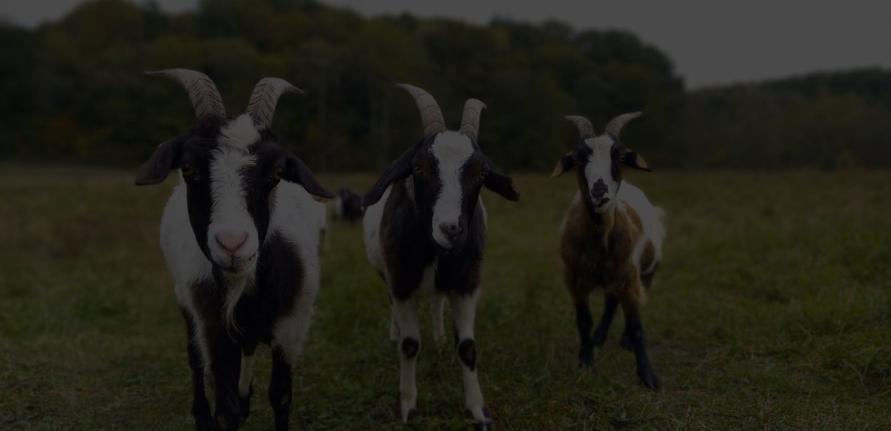
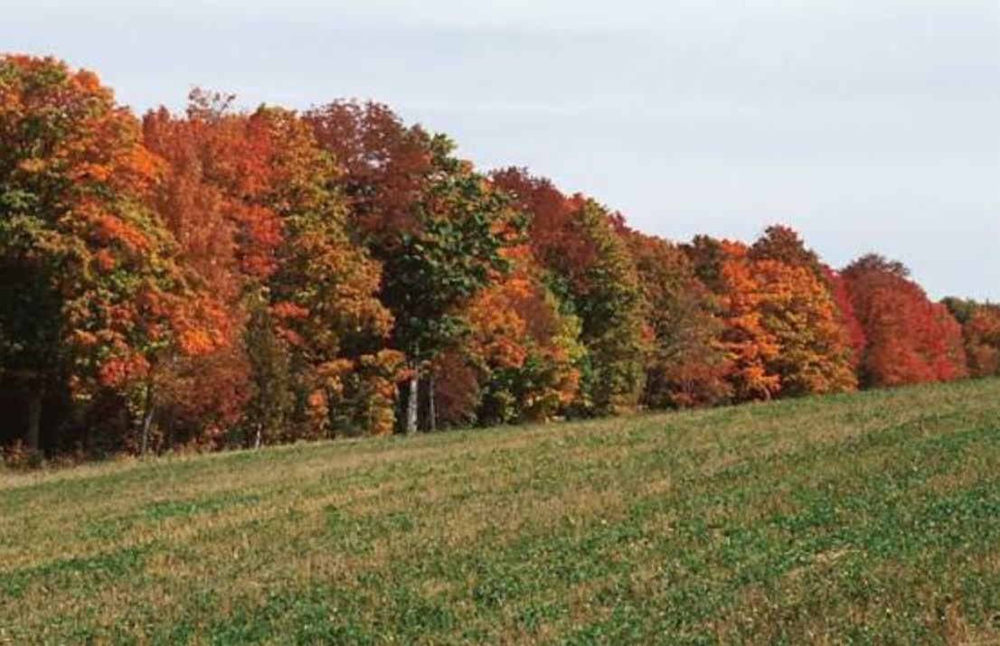

Seasonal
Blooms & Herbs
Apothecary batches rotate with the harvest—call ahead to confirm stock.
Small-batch · Seasonal
Seasonal produce, homemade elderberry syrup, handmade goods, fresh eggs and much more on our self serve Farm Market, open 7 days a week from 9am-Dusk. We accept Cash, Check & Venmo.

Seasonal produce, homemade elderberry syrup, handmade goods, fresh eggs, and more—plus a rotating apothecary of small-batch remedies.
Elderberries naturally contain vitamins A, B, and C and stimulate the immune system, helping fight the cold and flu.
Aronia & Elderberry Syrup
Stock changes with the season—elderberry syrup, aronia & elderberry syrup, salves (Wound Warrior, Black Drawing, Eczema), goat milk soap, lotion bars, lip balm, all-natural laundry soap.
Seasonal
Apothecary batches rotate with the harvest—call ahead to confirm stock.
